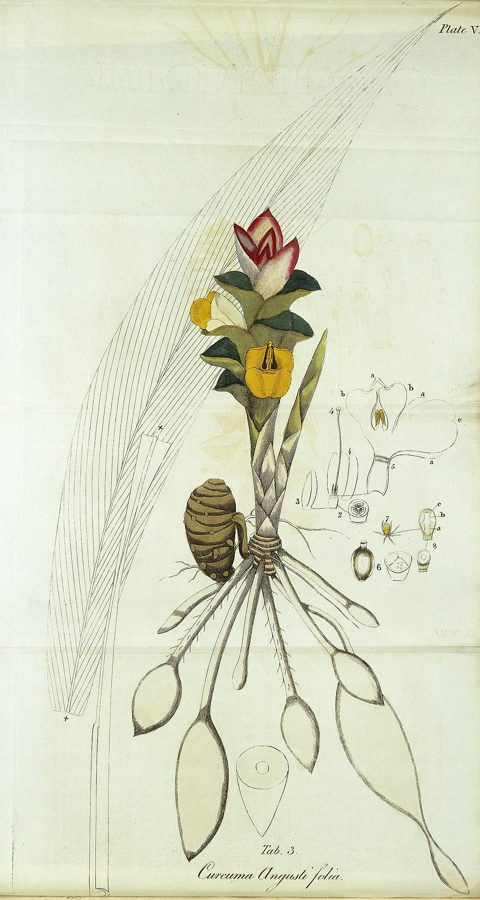

तिखुरEast Indian Arrowroot
Curcuma angustifolia · Zingiberaceae · FLR-0378

- Scientific name वैज्ञानिक नाम
- Curcuma angustifolia Roxb.
- Family कुल
- Zingiberaceae
- Hindi हिंदी
- तिखुर
- Local names स्थानीय नाम
- east indian arrowroot, tikhur
- Status here यहाँ की स्थिति
- native
- Movement आवागमन
- Resident, here all year
- Known from कहाँ दर्ज
- Others have published records from the wider Awadh–Purvanchal plain, none yet from Basti–Ayodhya अवध–पूर्वांचल से दूसरों के प्रकाशित अभिलेख, बस्ती–अयोध्या से अभी नहीं
- IUCN IUCN
- not evaluated
- Review समीक्षा
- not yet reviewed
When to look कब देखें
Expected mainly in May, June, July, August, September, October. मुख्यतः मई, जून, जुलाई, अगस्त, सितंबर, अक्टूबर में अपेक्षित।
Uses and possibilities उपयोग और संभावनाएँ
“Traditional medicine” means a documented traditional use, not a claim that it works. Nothing on this page is medical advice.
Drawn from the documented uses in the profile below, where each is labelled traditional, current or a research lead. All uses →
तिखुर / East Indian Arrowroot
Curcuma angustifolia Roxb. — Zingiberaceae
तिखुर — हल्दी कुल (जिंजिबरेसी) का यह एक औषधीय कंदयुक्त पौधा है जो नम जंगलों और पुराने बागों के साए में उगता है। इसके कंद से 'तिखुर' नामक अत्यंत पौष्टिक, शीतल और सुपाच्य सफेद स्टार्च (आरारोट) निकाला जाता है। गर्मी के मौसम में पत्तों से पहले इस पर सुंदर गुलाबी और पीले फूलों की कलगी वाली बाली निकलती है। बरसात में इसके संकरे लंबे पत्ते विकसित होते हैं।
Quick Identification त्वरित पहचान
| Feature | Description |
|---|---|
| Habit | Perennial rhizomatous herb with small globular tubers on root fibers |
| Leaves | Narrowly lanceolate, glabrous, green with long channeled petioles |
| Spike | Dense cylindrical spike produced from rhizome often before leaf development |
| Coma bracts | Conspicuous upper sterile bracts of a vivid pink, rose, or purple hue |
| Flowers | Tubular, pale yellow, nestled within green lower fertile bracts |
Wild turmeric relative distinguished by its narrow lanceolate leaves, bright pink to purple sterile top bracts on the inflorescence spike, and starchy rhizome tubers.
Field tip: Look in moist shaded forest understories in late May and June for colorful pink-topped flower cones emerging straight from the ground before the leaves appear.
हिंदी: हल्दी जैसा पौधा जिसकी पुष्प-बाली के ऊपर गुलाबी-बैंगनी रंग की सुंदर पत्तियां (कोमा) होती हैं और नीचे पीले फूल खिलते हैं। इसके कंद से पौष्टिक तिखुर बनता है।
Morphology आकारिकी
| Feature | Description |
|---|---|
| Rhizome | Small, ovoid rootstock with numerous fleshy root fibers bearing white tubers |
| Pseudostem | Formed of tightly overlapping leaf sheaths, standing erect from ground |
| Leaf blade | Narrowly lanceolate to oblong-lanceolate, acute, glabrous, pale green |
| Inflorescence | Scape emerging distinct from or centrally within leaves; dense spike |
| Bracts | Lower fertile bracts ovate, pale green; upper sterile coma bracts rose-purple |
| Measurement | Measurement not available in consulted open sources. |
An erect perennial herb arising from a small aromatic rhizome that bears multiple stalked, ellipsoid tubers filled with white starch. The leaves are narrow, lanceolate, long-petioled, and smooth. The inflorescence is a dense spike bearing green lower bracts and brilliant pink or purplish apical coma bracts. The flowers are tubular, pale yellow, with a three-lobed lip.
हिंदी: इसके कंद छोटे और सफेद गूदे वाले होते हैं। पत्ते लंबे और संकरे होते हैं। फूलों की बाली पर नीचे हरी पत्तियां और ऊपर गुलाबी-बैंगनी रंग की कलगी होती है जिसमें हल्के पीले फूल होते हैं।
Behaviour & Ecology पारिस्थितिक भूमिका
A geophytic perennial adapted to monsoon seasonality in deciduous forest floors. It spends the cold winter and dry spring dormant underground as fleshy tubers. In response to pre-monsoon showers and rising heat, the inflorescence scape bursts rapidly from the soil. The flowers secrete nectar, attracting specialized long-tongued solitary bees, flies, and skipper butterflies. Foliage expands during the monsoon to recharge rhizome starch reserves before dying back in autumn.
हिंदी: यह पौधा जाड़े और गर्मी में जमीन के अंदर कंद के रूप में सुप्त रहता है। पहली बारिश के साथ कंद से फूलों की डंडी बाहर निकलती है और बरसात में पत्तियां भोजन बनाकर कंद को बड़ा करती हैं।
Life Cycle / Phenology जीवन चक्र
Pre-monsoon awakening begins in May and June with the emergence of the flowering cone. Aerial leafy shoots develop during July and August, flourishing throughout the wet monsoon months. Photosynthates are translocated downwards into developing daughter tubers. As dry weather sets in during October and November, the leaves turn yellow and wither completely. The tubers remain dormant until the next summer.
हिंदी: मई-जून में फूल निकलते हैं और जुलाई में पत्ते आते हैं। बरसात भर पौधा हरा रहता है और अक्टूबर-नवंबर में पत्ते सूख जाते हैं। कंद जमीन में सुरक्षित रहता है।
Associated Species / Interactions संबद्ध प्रजातियाँ और सहजीवन
Forms part of the herb-layer community of sal (Shorea robusta) and mixed deciduous woodlands alongside wild gingers and ferns. The flowers provide early nectar for woodland bees and insects. The subterranean tubers are dug up and consumed by wild boars and porcupines, which also aid in dispersing severed tuber fragments.
हिंदी: यह साल के जंगलों और पुराने बागों के साए में उगता है। जंगली सूअर और साही इसके कंदों को खोदकर खाते हैं जिससे इसके कंद के टुकड़े इधर-उधर फैलते हैं।
Pests and Diseases कीट और रोग
Rhizome rot caused by fungal pathogens (Pythium and Fusarium species) can occur during excessive waterlogging in heavy soils. Leaf roller caterpillars occasionally damage tender leaf blades during peak monsoon humidity.
हिंदी: बहुत ज्यादा पानी भरने पर इसके कंद में सड़न रोग लग सकता है। बरसात में कभी-कभी पत्ती लपेटक कीड़ा इसके कोमल पत्तों को नुकसान पहुंचाता है।
Agricultural / Human Relevance कृषि प्रासंगिकता
Celebrated in Indian indigenous medicine and traditional food culture as the source of "Tikhur" starch. The rhizome tubers are harvested in winter, washed, grated, and repeatedly washed with water to extract a pure, snow-white, silky starch powder. Tikhur is revered in Ayurveda as a cooling, demulcent, and highly nutritive convalescent food for infants, the elderly, and patients recovering from fever or stomach ulcers. It is also cooked with milk and sugar into a revered fasting sweet dish (halwa).
हिंदी: इसके कंद को घिसकर और धोकर 'तिखुर' नामक सफेद आरारोट निकाला जाता है। यह अत्यंत पौष्टिक, सुपाच्य और पेट को ठंडक देने वाला आहार है जिसे व्रत में खाया जाता है और मरीजों व बच्चों को दिया जाता है।
Expected Locally स्थानीय रूप से अपेक्षित
Not a field record. Written from published accounts for eastern Uttar Pradesh. No confirmed local sighting yet — if you have seen it, that is what the atlas needs.
अभी तक स्थानीय पुष्टि नहीं। यह विवरण प्रकाशित स्रोतों से है, किसी अवलोकन से नहीं।
Occurs in shaded ravines, moist forest understories, and protected village mango groves across the sub-Himalayan and northern plains of eastern Uttar Pradesh. Observers should inspect damp forest floors in June for pink-crested spikes emerging from the ground.
GBIF holds published records from the wider Awadh–Purvanchal plain, none yet from Basti–Ayodhya.
A first local record for the atlas would be a clear photograph showing diagnostic features, accompanied by date, time, and precise location coordinates sent through the project's About page.
हिंदी: बस्ती, अयोध्या और तराई के नम जंगलों व पुराने बागों के साए में तिखुर का पौधा मिल सकता है। गुलाबी कलगी वाले फूल या कंद की फोटो एटलस को भेजें।
Distribution वितरण
Global range: Native to the Indian subcontinent, occurring through India, Nepal, Bangladesh, and Myanmar.
In India: Found wild across the central Indian plateau, eastern ghats, sub-Himalayan tracts, and northern plains.
In Uttar Pradesh: Documented from terai forests and wooded areas across the Gangetic plains.
In Basti district / eastern UP: Documented in damp woodland patches based on regional Ayurvedic and ethnobotanical surveys.
हिंदी: यह पूरे भारत, नेपाल और म्यांमार के जंगलों में पाया जाता है। उत्तर प्रदेश के नम तराई और मैदानी जंगलों में इसका प्राकृतिक फैलाव है।
Research Questions शोध प्रश्न
- What are the physicochemical and gelatinization properties of starch extracted from wild Curcuma angustifolia compared to arrowroot (Maranta arundinacea)?
- How do local tribal and rural gatherers sustainably harvest tikhur tubers without depleting wild woodland stands? / क्या कंद निकालते समय कुछ कंद जमीन में छोड़ दिए जाते हैं?
- What floral insect visitors achieve effective pollination in natural populations?
- A schoolchild can feel the silky texture of traditional tikhur starch powder mixed with cold water / क्या कोई बच्चा पानी में घोलकर तिखुर के स्टार्च की ठंडक और चिकनाई महसूस कर सकता है?
- How does shade density affect rhizome biomass accumulation in agroforestry plantations?
हिंदी: क्या तिखुर की खेती छायादार बागों में लाभदायक हो सकती है? क्या बच्चे इसके कंद से निकलने वाले सफेद स्टार्च को देखकर पहचान सकते हैं?
Similar Species मिलती-जुलती प्रजातियाँ
| Species | How to tell apart | हिंदी | |
|---|---|---|---|
| Turmeric \ | Curcuma longa | Cultivated relative; rhizomes vivid deep orange inside; spike produced alongside leaves | हल्दी के कंद अंदर से गहरे नारंगी होते हैं और इसकी बाली पत्तों के साथ ही निकलती है |
| Taro \ | Colocasia esculenta | Tuberous woodland and wetland margin herb with broad peltate leaves and edible corms | अरबी के पत्ते बहुत चौड़े दिल के आकार के होते हैं और कंद चिकने व बड़े होते हैं |
| Curcuma aromatica (Wild Turmeric) \ | Curcuma aromatica | Much broader, elliptic leaves; large aromatic yellowish rhizome smelling of camphor | जंगली हल्दी के पत्ते बहुत चौड़े होते हैं और इसका कंद पीला व कपूर जैसी खुशबू वाला होता है |
Field rule: Forest herb with narrow lanceolate leaves, producing dense spikes with bright pink-purple sterile top bracts from starch-rich white tubers.
हिंदी: संकरे पत्तों वाला हल्दी जैसा पौधा जिसकी फूलों की बाली पर चमकीली गुलाबी कलगी होती है और कंद से सफेद तिखुर निकलता है।
Taxonomy & Classification वर्गीकरण
Original description. Roxburgh (1810), Asiatick Researches, vol. 11, p. 338; described under the name Curcuma angustifolia.
Subspecies. Monotypic species across continental India.
Family and order placement. Belongs to the ginger family Zingiberaceae (subfamily Zingiberoideae, tribe Zingibereae), order Zingiberales, class Liliopsida.
Phylogenetic notes. Placed in the genus Curcuma L., characterized by distinctive sterile coma bracts on the inflorescence.
IUCN status rationale. Not currently evaluated on the IUCN Red List of Threatened Species.
हिंदी: इसे 1810 में विलियम रॉक्सबर्ग ने Curcuma angustifolia नाम से वर्णित किया था। यह जिंजिबरेसी (हल्दी कुल) का सदस्य है।
Photo Gallery फोटो गैलरी
No photos yet — add field photos to media/species/east_indian_arrowroot/ and run node scripts/sync_photos.js.
Photos needed आवश्यक फोटो
- [ ] Inflorescence spike showing pink-purple coma bracts and yellow flowers (गुलाबी कलगी और पीले फूलों वाली बाली)
- [ ] Narrow lanceolate leaves emerging in forest understory (जंगल में उगते संकरे लंबे पत्ते)
- [ ] Freshly dug rhizome tubers showing white starch flesh (खोदा गया कंद जिसके अंदर सफेद स्टार्च दिखे)
References संदर्भ
- Original description: Roxburgh, W. (1810). Descriptions of several of the monandrous plants of India. Asiatick Researches, 11, p. 338.
- Baker, J. G. (1890). Scitamineae. In J. D. Hooker, The Flora of British India, Vol. 6. L. Reeve & Co., London, p. 210.
- Duthie, J. F. (1920). Flora of the Upper Gangetic Plain, and of the Adjacent Siwalik and Sub-Himalayan Tracts. Vol. 3, Part 2. Superintendent of Government Printing, Calcutta, p. 283.
- Leong-Škorničková, J., Šída, O. & Marhold, K. (2010). Back to types! Towards stability of names in Indian Curcuma (Zingiberaceae). Taxon, 59(1), 269–282.
- GBIF Occurrence Data — Curcuma angustifolia, India (2025).
Source file: species/flora/medicinal/east_indian_arrowroot.md